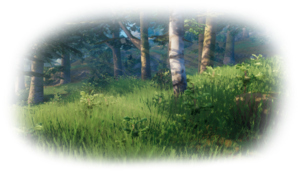
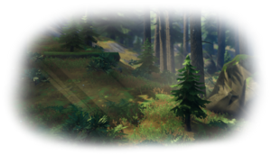
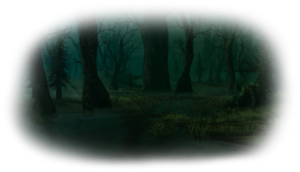
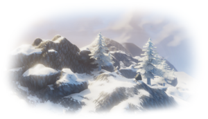
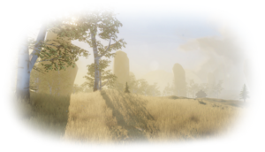
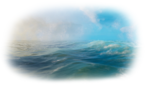
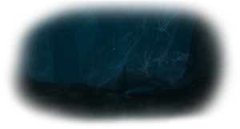
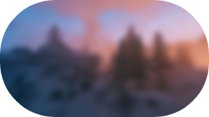
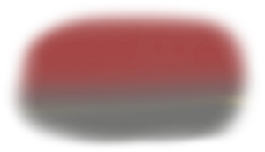

Biomas
| Bioma | Descripcion | Disponibilidad (desde el centro del mundo) |
|---|---|---|
|  |
Bioma inicial, lleno de abedules, hayas y robles que estan habitados por mobs de bajo nivel |
Desde 0 a 5100 metros |
|  |
Bosque lleno de vegatacion con una mezcla de pinos y abetos. Puede tener grandes colinas con rocas expuestas y es el unico bioma donde se puede extraer cobre y estaño, despues de derrotar a Eikthyr y adquirir un pico como el pico de Antler. Hay un gran cantidad de Greydwarfs, trolls y esqueletos alrededor de tumbas funerarias y mazmorras. La mayoria de las Camaras funerarias generadas en el mundo estan ubicadas en este bioma, estas son la primera fuente de Surtling cores que que le permiten al jugador construir una forja y comenzar a procesar metales. Por lo general, el jugador explorara el bosque oscuro como el segundo bioma despues de los prados. |
Desde 500 metros |
|  |
El Pantano es un bioma. Los pantanos son áreas oscuras y fangosas, llenas de árboles enormes y criaturas hostiles. Enormes árboles cubren el cielo en el pantano, lo que hace que el bioma siempre sea difícil de ver. Los géiseres de fuego son un hallazgo poco común en el bioma, siempre rodeados por 3 Surtlings. El pantano también es el lugar para encontrar chatarra, un material de artesanía. Las estatuas de piedra también están presentes en el pantano. Su propósito es actualmente desconocido. Siempre llueve ligeramente en el pantano, sin importar el clima en otros lugares; esto significa que el jugador siempre estará mojado cuando viaje por el pantano, lo que aumenta aún más la dificultad del área, especialmente por la noche, donde el jugador siempre estará frío. El veneno también es un efecto común en el pantano de Oozers, Blobs y Leeches, lo que hace que el aguamiel resistente al veneno sea particularmente útil. El pantano contiene criptas hundidas, que requieren una llave de pantano para desbloquear. Estas criptas son un conjunto de habitaciones que a menudo están separadas por pilas de chatarra fangosas, que se pueden extraer para obtener chatarra, trozos de cuero y huesos marchitos. Además, se pueden encontrar estructuras abandonadas y reproductores de criaturas hostiles. Además de las criptas sumergidas, se pueden encontrar montones de chatarra embarrados enterrados debajo del pantano. Estas vetas se pueden ubicar usando Wishbone después de derrotar a Bonemass, aunque se debe tener en cuenta que tienden a ser poco comunes y generalmente no son viables para proporcionar cantidades significativas de hierro, porque el jugador no puede extraer el depósito cuando está completamente sumergido en agua. |
Desde 2000 a 8000 |
|  |
La montaña es un bioma que presenta picos nevados congelados enmarcados por abetos. Esta región helada e implacable es el hogar de los Lobos y otros hijos de Fenrir. Los dracos, descendientes de Moder, se pueden encontrar en los cielos haciendo sus nidos en sus picos donde ponen sus huevos de dragón. Cuidado con las pilas de piedra que se mueven, podrían estar más vivas de lo que piensas, removiendo al golem de piedra en reposo. Las montañas también pueden contener Frost Caves, que son un calabozo que alberga a los cultistas y su mascota Ulv. Los murciélagos también tienen su hogar aquí y pueden asustar a los vikingos desprevenidos. Los cristales se pueden encontrar creciendo naturalmente en las paredes y ocasionalmente contienen un gran lago subterráneo. Entrar en el bioma de la montaña causará el efecto de congelación en el jugador. Este efecto se puede anular bebiendo hidromiel resistente a las heladas, usando una capa Lox, usando una capa de piel de lobo o usando el cofre de armadura de lobo. Las patas de la armadura Wolf no ofrecen resistencia a las heladas. Este efecto también es anulado por fogatas cercanas. |
Por encima de los 50 metros de altitud (excluyendo Ashlands), desde 1000 metros |
|  |
The Plains es un bioma abierto de par en par con colinas ondulantes y árboles dispersos. Es el hogar de muchos tipos diferentes de formaciones rocosas, algunas que parecen ser naturales (como enormes monolitos de piedra destructibles) y otras construidas por los nativos Fulings. Poblados Fuling Villages se pueden ver repartidos por las llanuras, construidos con piel de ciervo y hueso. En la progresión natural del juego, el bioma de las llanuras está destinado a ser el último que visite el jugador. Esto también hace que el bioma de las llanuras sea el más difícil y peligroso de navegar, a pesar de su apariencia. Los recursos que se encuentran únicamente en las llanuras permiten al jugador fabricar las armas más poderosas del juego con metal negro e hilo de lino, y el nivel más alto de comida con harina de cebada y carne de salmón ahumado. Finalmente, las Llanuras contienen alquitrán dentro y alrededor de los pozos de alquitrán, lo que permite al jugador construir los muebles de más alto nivel y edificios o decoraciones de madera oscura. Tenga cuidado cuando navegue cerca de las llanuras, ya que los Deathsquitos pueden aparecer en la playa y atacar en el agua. |
Desde 2900 hasta 8000 metros |
|  |
El océano es un bioma que actualmente es un gran cuerpo de agua vacío. Solo es accesible de manera realista en bote, ya que nadar en él agota rápidamente la resistencia y provoca ahogamiento. Los jugadores que se aventuren en este bioma pueden ser atacados ocasionalmente por una serpiente. |
Por debajo de -26 metros (excluyendo Ashlands) |
|  |
The Mistlands es un bioma de trabajo en progreso. Actualmente, no tiene engendros. El bioma es una colección de antiguos árboles altos y raíces, cubiertos de telarañas gigantes y cráneos gigantes en el suelo. Las raíces resaltan y muestran un nombre como si fueran un recurso cosechable, pero actualmente no se pueden recolectar con ninguna herramienta conocida. Actualmente, el único recurso que se puede cosechar en Mistlands son pequeños abetos y piedras extraídas de las rocas. Cuando viajas a Mistland, ya sea a pie o en barco, el cielo cambia a un tono mucho más oscuro como una noche eterna. El jugador puede refugiarse debajo de antiguas raíces. |
Desde 5900 hasta 10000 metros |
|  |
El Norte Profundo es un bioma. Es un vasto bioma nevado que se encuentra en el extremo norte de Valheim. El Norte Profundo está desprovisto de cualquier recurso, excepto el montículo de roca ocasional. Las capas de hielo flotan a lo largo de las costas, un peligro potencial para cualquier barco que intente aterrizar aquí. En altitudes más altas, el norte profundo puede convertirse en un bioma de montaña. Al igual que las Montañas, el Norte Profundo puede tener tormentas de nieve que causan frío y el jugador debe usar ropa resistente a las heladas o beber hidromiel resistente a las heladas para evitar daños continuos por congelación. Aparte de las criaturas que atraviesan los límites de las montañas adyacentes, hasta el momento no hay criaturas confirmadas engendradas en el norte profundo. El Norte Profundo siempre se encuentra en el Norte. |
Al Norte del mundo |
|  |
Ashlands es un bioma. Es un páramo estéril y ceniciento ubicado al sur de cada mapa que solo alberga Surtlings (excluyendo los géiseres de fuego). Ocupa una forma de media luna grande y delgada a lo largo del borde sur. Muchas grandes masas de tierra e islas más pequeñas intercaladas con criaturas en llamas dando vueltas. A veces, se puede encontrar un grupo de Surtlings alrededor del metal resplandeciente. Puedes extraer el metal resplandeciente con un pico de hierro y obtener mineral de Flametal. |
Al Sur del mundo |